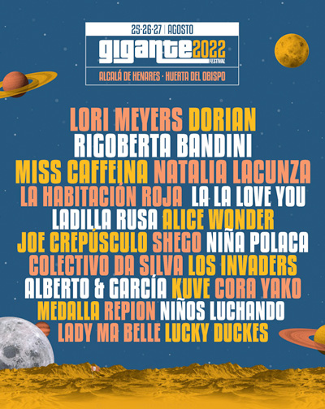
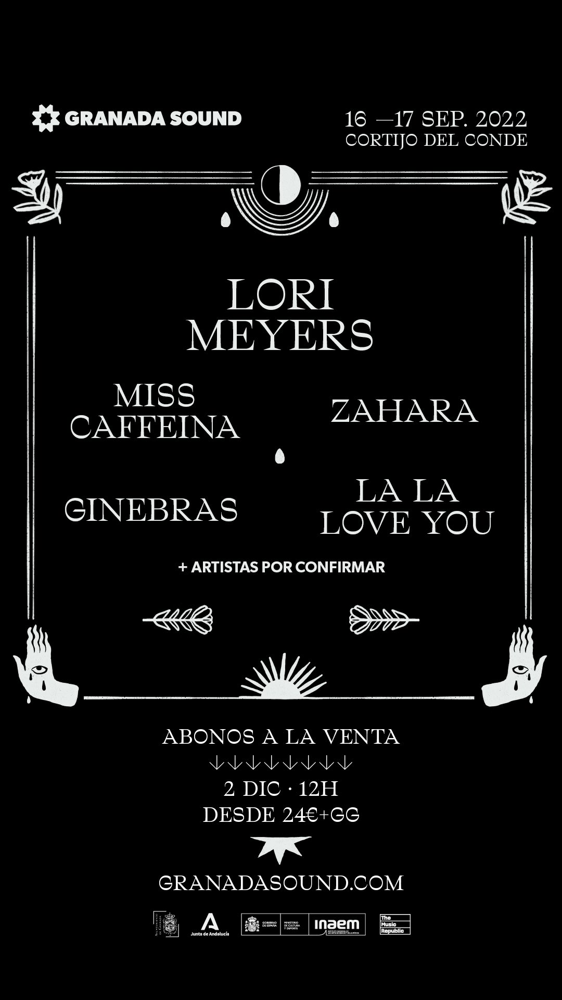
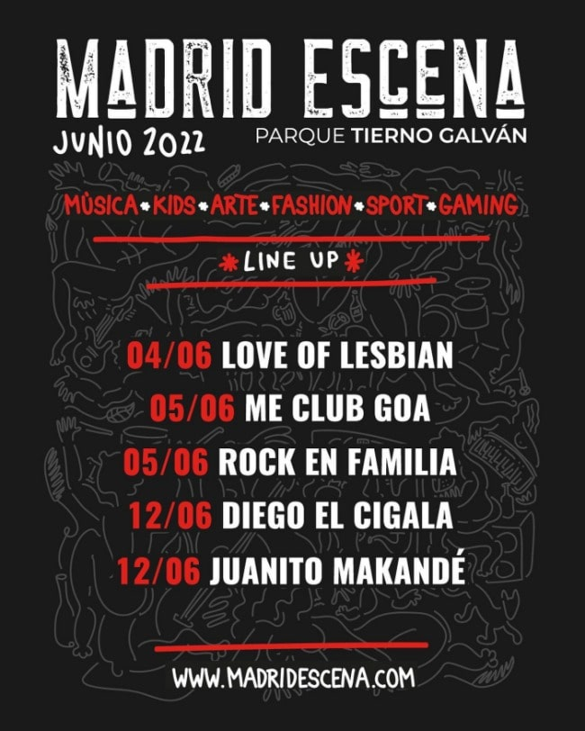
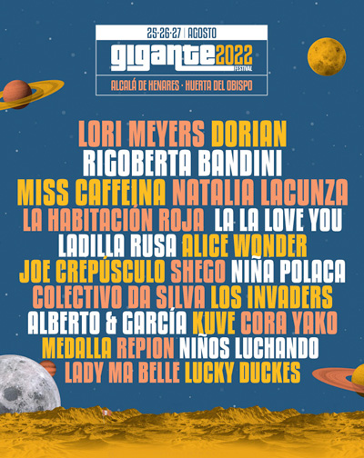
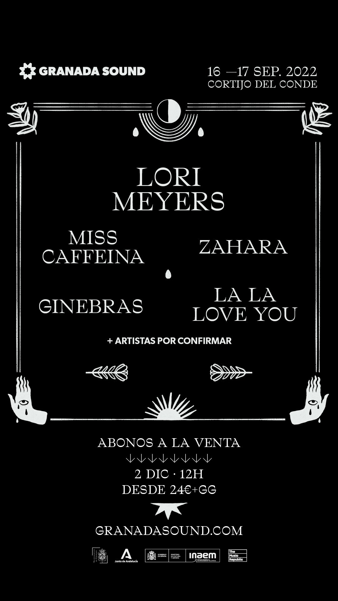
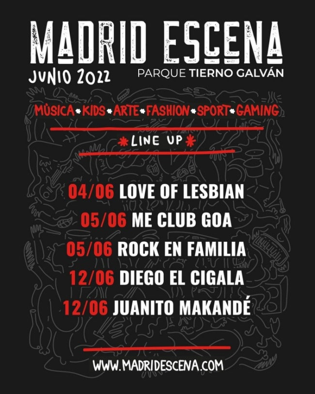

Todo Indie
Plataforma dedicada a explorar el amplio universo de la música popular sonando en España. Todo Indie cuenta con un prestigioso y ecléctico grupo de colaboradores en varias ciudades de América y Europa.
NOTICIAS
Ultima gira de Bunbury
Enrique Bunbury da detalles de sus malestares y dolencias, aunque tiene una ultima gira este 2022 no tiene pensado desaparecer ni mucho menos de la música. Es en esto donde se le nota más optimista y animado, con una palabras que dejan traslucir cierto alivio por haber tomado la decisión: “A partir de ahora, se abre ante mí un sinfín de posibilidades, en las que lo creativo, es decir, componer canciones, grabar discos, pintar y escribir libros de poesía, forman parte de mis objetivos. Y finaliza con “Ha sido un gran viaje. Gracias a todos”. en su web site encontratan los detalles de la gira. Enrique Bunbury
Se hace pasar por Bono (U2) para no pagar en restaurante.
Un hombre se ha hecho pasar por la estrella Bono de U2 para engañar unos dueños de un restaurante de Dallas, Estados Unidos, y no pagar el servicio. Y viendo lo mucho que se parece al cantante irlandés, podemos entender que la cosa colase.
FESTIVALES
Eventos destacados para 2022.
 




